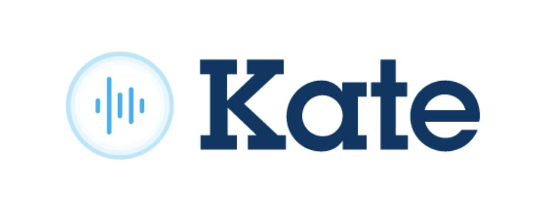

450+ vizuálních atributů.
Hluboká analýza zákazníka v reálném čase.
Zobrazení relevantní nabídky na pobočce do 1,6 s.

Spojení fyzického kontextu s bankovní historií klienta.
Dostává kontext a hotový lead →
Výrazně vyšší konverze a úspora času.
Agregovaná data o návštěvnosti a chování zákazníků pro lepší predikce a staffing poboček.
Využití fyzických dat (kdo reálně chodí na pobočky) pro přesnější cílení online marketingových kampaní banky.